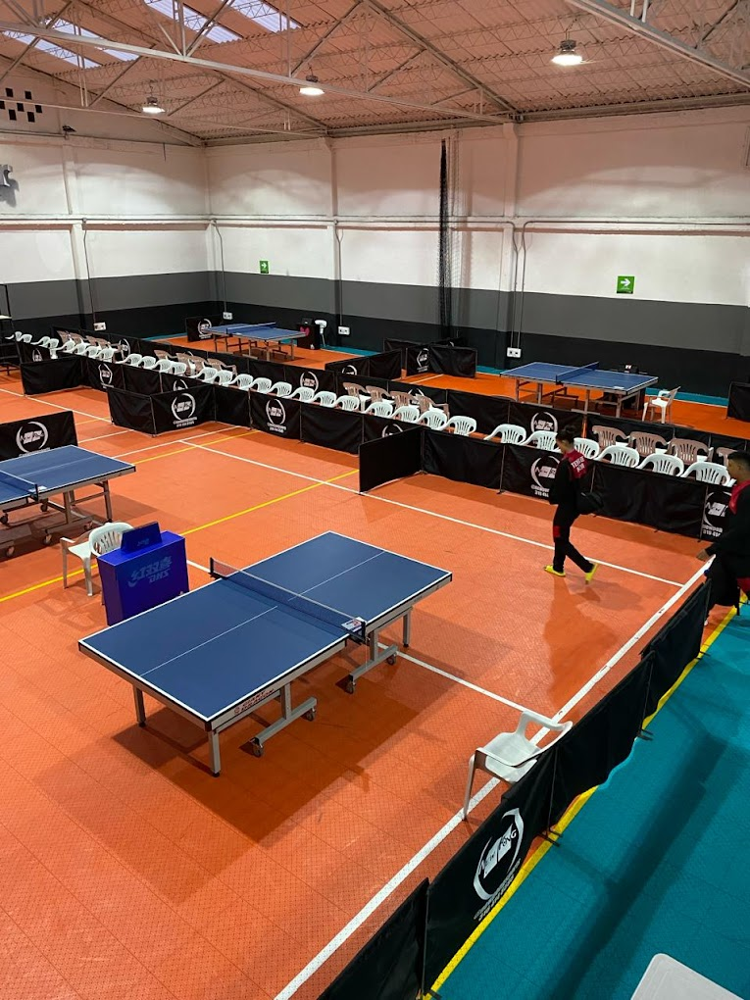
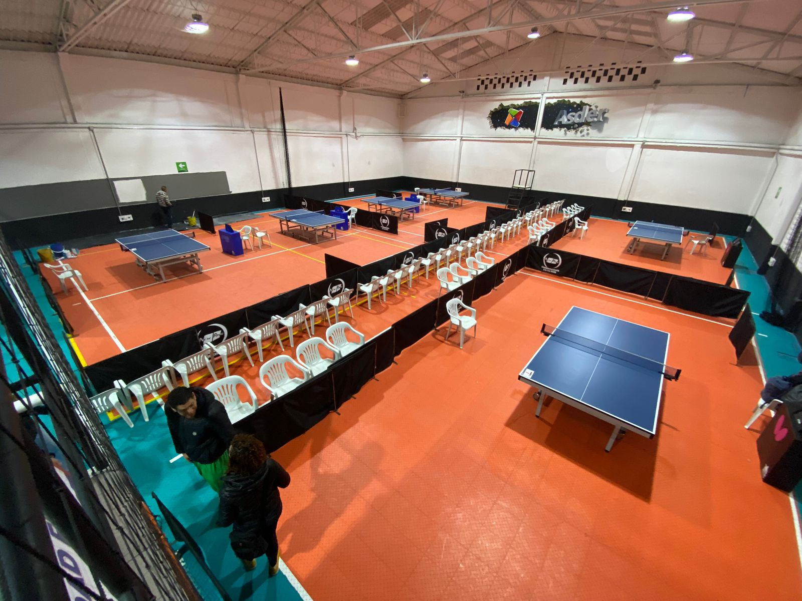

Cancha de voleibolcubierta en Bogotá.
Práctica libre, alquiler por hora y sede para torneos. Abre a las 8 a. m.
Fichadel coliseo.
- Dirección Cra. 24 #77-40, barrio San Felipe, Bogotá
- Horario Abre a las 8:00 a. m.; horario completo por WhatsApp
- Cancha Cubierta, red y postes reglamentarios; líneas para bádminton
- Deportes Voleibol, bádminton, tenis de mesa, simuladores de ciclismo
- Para torneos Graderías, iluminación, mesa de jueces y personal de apoyo
- Servicios Baños y vestier, hidratación, parqueadero cercano




Aquí ya se jugóen serio.
- Juegos Nacionales Universitarios Ascun 2023.
- Torneos abiertos de voleibol con premiación de hasta $5.000.000.
- Festivales de tenis de mesa y las escuelas Kids y Young cada semana.
Reserva práctica libre
Agenda de muestra: la disponibilidad real se confirma por WhatsApp.
Elige espacio, día y hora y te confirmamos por WhatsApp. Cuando el equipo confirma, la franja queda reservada para los demás.
Precios
Tarifa por hora según la franja para práctica libre y tarifa aparte para torneos con jueces; te confirmamos el valor al reservar. Temporada para grupos recurrentes con tarifa especial.
Cómo llegar
Cra. 24 #77-40, barrio San Felipe. A pocas cuadras de la Avenida Caracas con calle 77.
Abrir indicaciones en Google MapsSede para torneos
Organizadores, ligas y empresas con torneo propio alquilan el coliseo por fecha o por temporada.
Ver condiciones para organizadoresPreguntas frecuentes
¿Cuánto cuesta alquilar la cancha de voleibol?
La práctica libre tiene tarifa por hora según la franja y los torneos con jueces una tarifa aparte; te confirmamos el valor al reservar. Los grupos recurrentes tienen tarifa por temporada.
¿Cómo reservo una cancha?
Elige la franja en el calendario de esta página y confirma: se abre WhatsApp con tu reserva escrita. También puedes escribirnos indicando día, hora y cuántas personas.
¿Dónde queda y cómo llego?
Cra. 24 #77-40, barrio San Felipe, Bogotá, a pocas cuadras de la Avenida Caracas con calle 77 y de la Avenida Carrera 24. Abre a las 8:00 a. m.; el horario completo te lo confirmamos por WhatsApp.
¿Qué deportes se pueden practicar?
Voleibol, bádminton, tenis de mesa y simuladores de ciclismo. La cancha es cubierta, con red y postes reglamentarios.